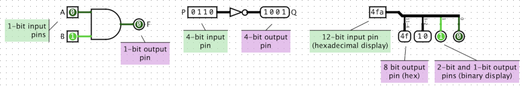
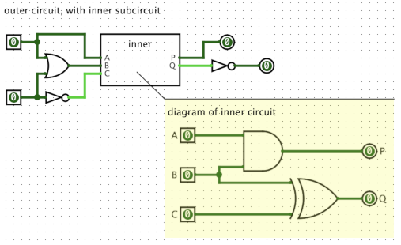

Found in Wiring Library

Pins act as inputs to, or outputs from, a circuit. Input pins have squared corners, output pins are rounded.
Pins are interactive: you can poke an input pins to change the value they send into your circuit, and output pins can't be poked but instead always display the value coming from your circuit, or if there is no value to display, output pins show a 'z', the standard notation for "floating" or "no specific value". When used interactively, a 1-bit input pin behaves much like a Button, and a 1-bit output pin behaves similarly to an LED. Unlike Buttons and LEDs, the colors of pins can't be customized. But pins can carry multiple bits, and display their values numerically in your choice of format (binary, signed decimial, hexadecimal, etc.), features not available for Button and LED.
Pins enable subcircuits: When one circuit is embedded as a subcircuitwithin another, pins are how values traverse between the outer and the inner circuits. The outer circuit sends data into the inner circuit's input pins, and inner circuit's output pins feed data back to the outer circuit. No other component has this ability: a Button inside the inner circuit, for example, can't be poked or driven by signals from the outer circuit, and an LED inside the inner circuit can't affect or be seen from the outer circuit. (But see dynamic subcircuit appearance for an advanced technique allowing more flexibility when designing subcircuits.)

Normally, 1-bit pins show color-coded binary values, '0' or '1'. Pins show 'z' to indicate a floating value (for example, if an output pin isn't connected to a wire, or is connected to a wire that doesn't carry any value). In cases of errors, pins become red, and output pins show 'E'.
Multi-bit pins show values in numeric form, but don't show colors. They can be configured to show binary, hexadecimal, octal, signed decimal, or unsigned decimal. The symbols 'z' and 'E' are also used to indicate floating values and errors for multi-bit pins.
In printer view, or when exporting to image format, pins normally display their Bit Width, instead of showing a value.
When the component is selected or being added,
Alt-0 through Alt-9 alter its Data Bits
property,
the arrow keys alter its Facing
property,
and Alt with an arrow key alters its Label Location
property.
Clicking an output pin has no effect, although the pin's properties will be displayed.
Clicking an input pin will toggle the bit that is clicked or, when the 'Radix' is set to something other than binary, iterate through different possible values. The keyboard can also be used to enter values using the Poke tool.
When viewing the state of a subcircuit as described in the `Debugging Subcircuits' of the User's Guide, the value of each input pin is tied ("pinned") to whatever value the subcircuit is receiving from the containing parent circuit. Manually change the value of the input pin break this link between the subcircuit's state and the containing circuit's state, essentially creating a new isolated simulation of just this one circuit, independent from any parent circuit. In this situation, any attempting to change the input pin's value using the Poke Tool will cause Logisim to warn the user and confirm whether breaking this link is actually desired.
Supports VHDL and Verilog synthesis.